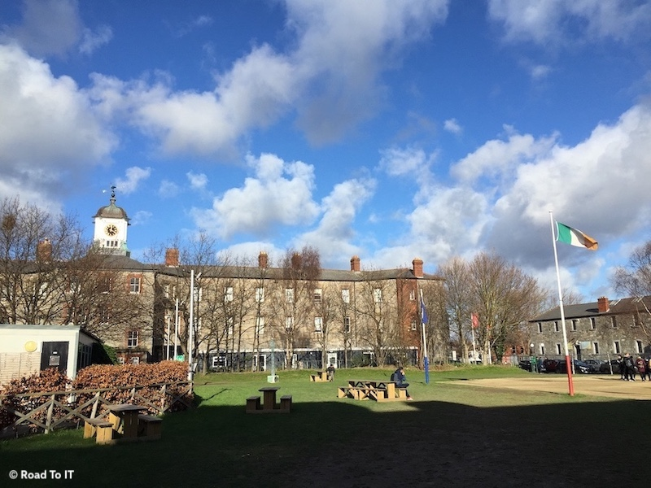

About the project
Bonjour üëã
My name is Tom-Eliott and I’m currently studying IT Engineering at EPITA, a French engineering school in Paris. During the first semester of 2019, I went to study, as part of my engineering studies, at the Griffith College Dublin in Ireland.

It was an opportunity for me to discover new cultures and places around Ireland. I met many foreign and Irish students to exchange with them about local cultures and about my own country, France.
Proud of my country, my region and my city, I decided to become an ambassador for the Paris region, Île-de-France. This experience allowed me to inform the students of the possibilities offered today to study in the Île-de-France region, which includes of course the city of lights Paris, but also many other cities, home to startups, incubators, companies and innovative schools specialising in Computer Science and IT.
What is the Île-de-France region ?
If you are a student abroad, you probably don’t know the Île-de-France region, and yet, it is the 1st tourist region in the world. You probably know one of its main cities : Paris. Paris is the city of lights, one of the most important technological centers in Europe and also a city turned around innovation, design and creativity.
When we talk about the attractiveness of Paris, especially in the field of new technologies, we are actually talking about the attractiveness of the Île-de-France (also called “Paris Region”), which has more than 12 million inhabitants including 663.000 students, nearly 16 universities and 70 grandes écoles (schools of engineering, commerce, digital marketing, …).
By hosting more than 110.000 foreign students in Île-de-France, higher education institutions (like engineering schools and universities) draw the attractiveness of France, and fun fact : France is the 4th country chosen by international mobility students for their higher education !
What is the purpose of this blog ?
I made this blog as part of the contest “Trophies student ambassadors of the Île-de-France”. The purpose of the contest is to present the higher education, research and innovation ecosystem of Île-de-France to foreign students and researchers, to encourage them to pursue their higher education and/or research work in Île-de-France.
As a student in an engineering school and residing in Île-de-France, I present in this blog the main institutions and courses specialized in the field of new technologies and innovation.
The institutions presented offer a course for foreign students, I provide the contact of the international service of each school, but if you have a question, feel free to contact me ! ü§ü
The purpose of the region is to make Île-de-France a “start-up region” and the “Silicon Valley” of Europe.